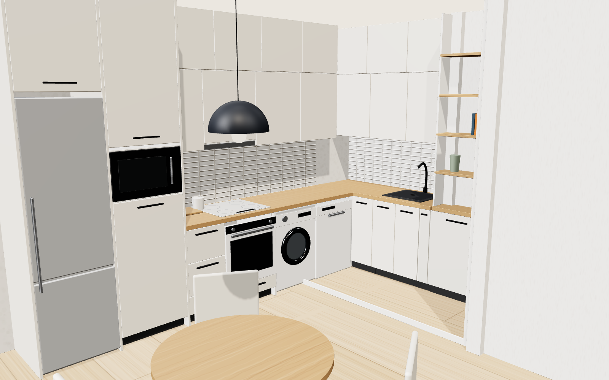
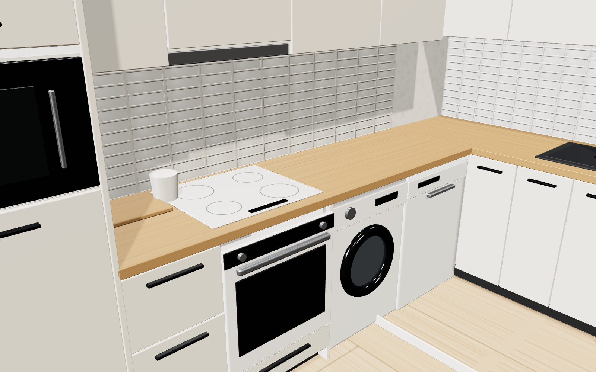
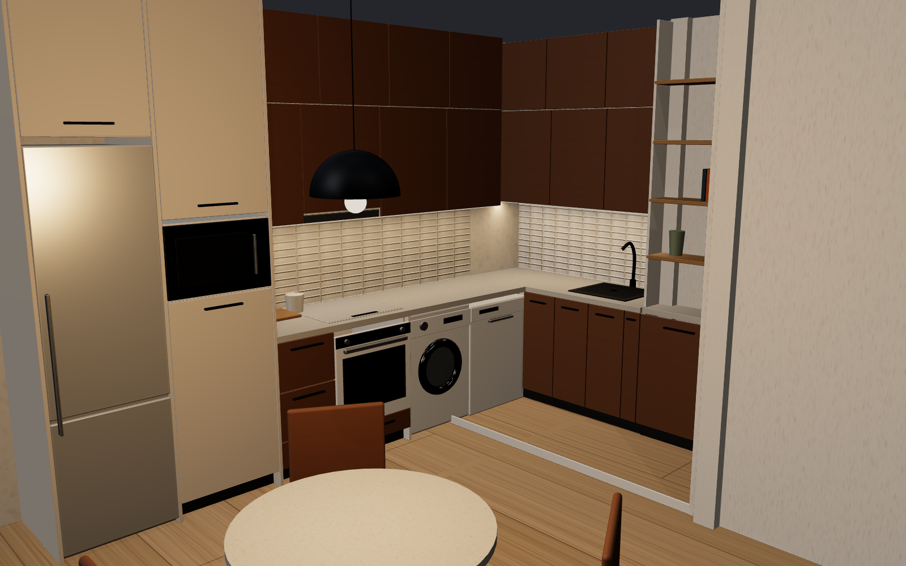
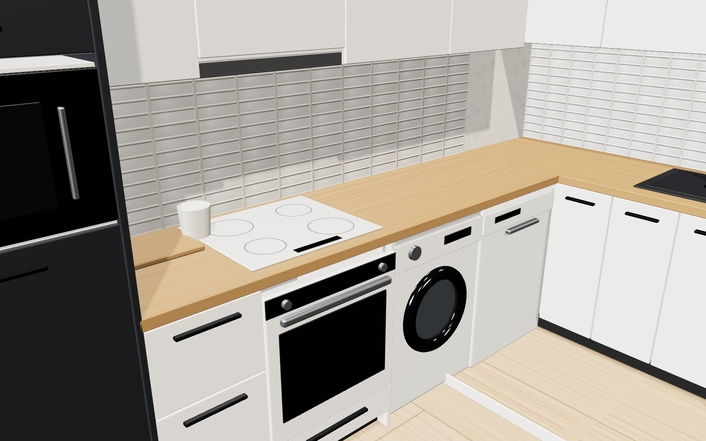
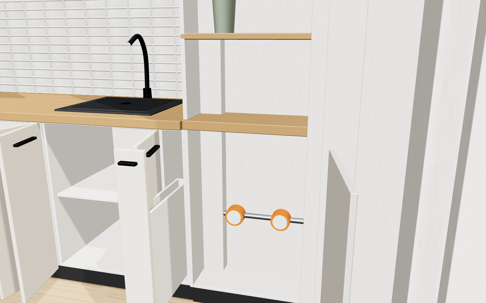
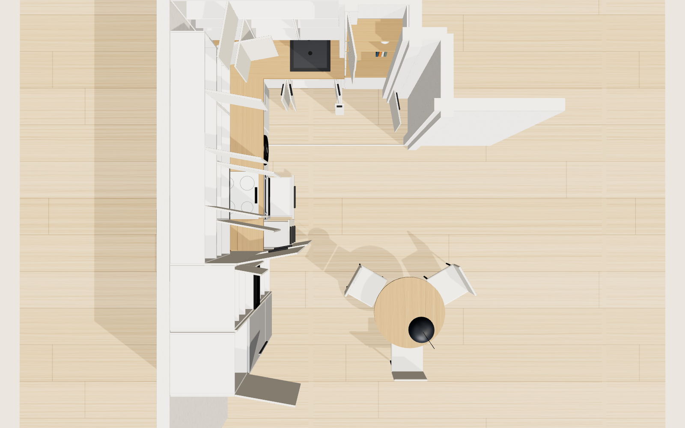

Так выглядит сдача по проекту: ракурсы из 3D-модели по вашему чертежу, варианты цвета, дневной и вечерний свет, узел с датчиками и план. Нажмите на картинку, чтобы увеличить.


Рабочая зонаварочная, духовка, стиральная машина под столешницей

Вечер · орех и терракотаподсветка под шкафами, тёплый свет

Белый + графиттот же проект в контрастной палитре

Ниша 592 с датчикамираспашной фасад со съёмной стенкой - доступ сохранён

План сверхурасстановка по вашему чертежуПенал с холодильникомLG в нише - со стороны зала ровный шкаф